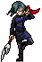

Eu e meu Docinho ❤

Olá! Meu nome é Alexandre Donisete, tenho 25 anos e sou uma pessoa cheia de paixões e motivações. A maior delas é minha sobrinha Malu, que está sempre me alegrando e aumentando meu ânimo nos momentos difíceis. Tenho um grande interesse por tecnologia e por tudo o que envolve aprendizado e evolução pessoal. No meu tempo livre, gosto muito de jogar cardgames, assistir animes ou series, correr e, recentemente, comecei a desenvolver o hábito da leitura, algo que esta sendo muito difícil mas que aos poucos estou aprendendo a gostar.
Terapia Cognitivo-Comportamental

Além das minhas paixões pessoais, sempre tive um grande interesse por Psicologia, especialmente pela abordagem da Terapia Cognitivo-Comportamental (TCC). Esse interesse nasceu da vontade de compreender melhor como os pensamentos influenciam nossas emoções e comportamentos, e como pequenas mudanças na forma de enxergar o mundo podem transformar nossa vida prática. A TCC me chamou atenção justamente por ser uma abordagem objetiva, estruturada e focada em resultados reais, algo que combina muito com a forma como eu gosto de aprender e evoluir. A TCC trabalha com a ideia de que nossos pensamentos, sentimentos e ações estão conectados. Quando entendemos esses padrões, podemos mudar comportamentos, reduzir sofrimento emocional e desenvolver habilidades mais saudáveis para lidar com desafios do dia a dia. Esse tipo de visão sempre me motivou a estudar mais sobre o assunto e aplicar conceitos de autoconhecimento na minha própria rotina.
Maki Zen'in e Shinobu Kochou

Sempre gostei de animes porque eles vão além do entretenimento e trazem histórias profundas, emocionais e cheias de superação. Esse universo me acompanha desde criança e sempre me inspirou a refletir sobre força, resiliência e evolução pessoal. Entre tantos personagens marcantes, dois sempre se destacaram para mim: Maki Zenin e Shinobu Kochou. A Maki me inspira pela determinação, pela forma como enfrenta limites impostos pelos outros e pela força que ela constrói por conta própria. Já a Shinobu me cativa pela inteligência emocional, pela calma diante das dificuldades e pela maneira criativa como transforma fragilidade em estratégia. Me identifico com as duas porque elas representam lados diferentes da força — a força externa e a força interna — e ambas refletem qualidades que admiro e busco desenvolver na minha própria trajetória.